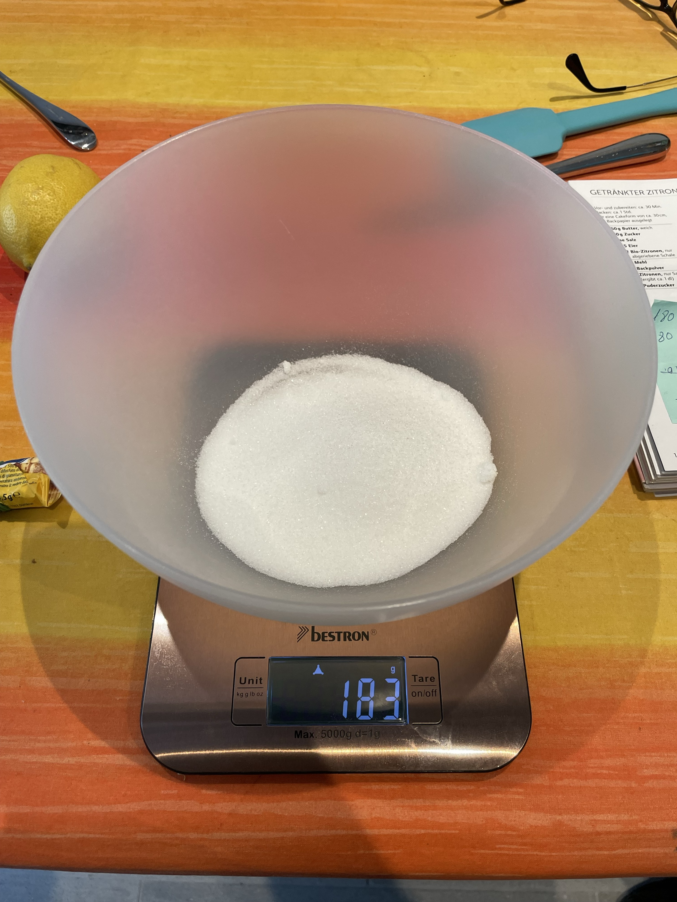

Step 1: Prepare all the ingredients
.jpg)
Prepare all the ingredients so that you are ready and dont need to search for them. The ingredients list is at the top, which you can download.
Step 2: Prepare the lemon zest
.jpg)
Grate the zest of a fresh lemon for additional flavor. For now, leave it aside as we will need it later.
Step 3: Weigh the sugar
Measure the correct amount of sugar (180g) using a kitchen scale. Place it in a bowl where you can mix it later.
Step 4: Add butter to the bowl
.jpg)
Put about 180g of butter into the bowl with the sugar.
Step 5: Mix the ingredients
.jpg)
Use a hand mixer or stand mixer to combine the sugar and butter into a crumbly mass.
Step 6: Add eggs
.jpg)
Add the 5 eggs one at a time, mixing them into the butter and sugar mixture.
Step 7: Weigh the flour and baking powder
.jpg)
Meanwhile, measure 250g of flour and two teaspoons of baking powder to add to the bowl.
Step 8: Add flour to the bowl
.jpg)
Carefully add the measured flour and baking powder to the mixing bowl.
Step 9: Prepare the baking tin
.jpg)
Prepare the baking tin while the mixture is being made.
Step 10: Add the mixture to the tin
.jpg)
When the mixture is smooth and fluffy, pour it into the prepared baking tin. Scrape down the sides of the bowl to ensure everything is evenly mixed.
Step 11: Bake
.jpg)
Place the baking tin in the oven and set the temperature to 180°C.
Step 12: Prepare the lemon juice
While the cake is baking, cut the lemon in half and squeeze the juice.
Step 13: Sweeten the lemon juice
.jpg)
Add one spoon of sugar to the lemon juice to make it sweet.
Step 14: Add the lemon juice
Once the cake is done baking, pour the lemon juice on top to add extra flavor. Let it rest for a while.
Step 15: Finish
.jpg)
Your lemon cake is ready! Enjoy!